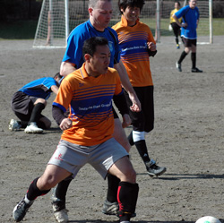
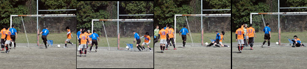
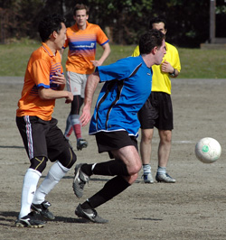
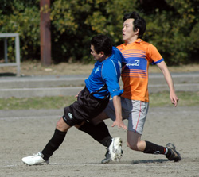
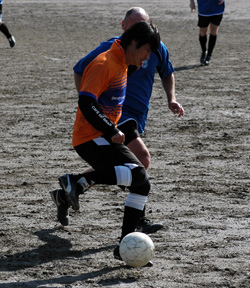

|
Oi Futo Dai Ichi, Saturday 7th March
The grizzled veterans of The Albion Old Boys are almost perversely proud of their ability to give opponents a good mugging while nicking a narrow win, so to label them Free-Flowing Entertainers might be a bit like complimenting Mel Gibson's Braveheart on his cute tartan skirt. But the Old Boys may have to get used to the label as a 6-1 win over Barbarians made it 17 goals scored in the last 3 games, and moved the Albion into second place in TML Division 2.
Another ridiculously rainy Friday, another fine Saturday that dried out the Oifuto dirt just enough to make it playable. BEFC and the Swiss, grinding out a grim goalless draw in the game before us, did a nice job of churning up the middle of the pitch but were kind enough to avoid using either penalty area, so with a bit of weak early Spring sunshine and a bay breeze that was much less assertive than usual, it was a good day for a game. And after some of the short-handed struggles they've had this season the Old Boys were positively mobbed up for this one, Silver Supremo Karl Twohig showing the strain as he looked around frantically for a third set of fingers to help him count up to 15.

The Old Boys were quick off the mark, scoring within the first ten minutes. Rob MacGregor's corner kick showed all the technique you'd expect from a player who'd crawled home from Roppongi at 7am that morning, not just failing to clear the first defender but failing to achieve any kind of liftoff as it scuttled to the near post. Totally fooled the Barbarian defence though, a miskicked clearance falling to George Pele Clarkson, who finished with murderous venom from two yards out.
The second goal was a classic quick counter-attack, right back Juan Yamashita knocking the ball up to centre forward Sam Chamovitz, who controlled it, turned and passed it though a very square Barbarians defence for the onrushing Hitoshi Ono, who gave the keeper no chance. And a few minutes later another quick accurate ball out of defence, this time from Rob on the left, sent Hitoshi on his way to his second. But no teamwork required for goal number four - Sam did it all himself, winning the ball in the centre circle and again punishing the Barbarian defence for playing too high and too square as he skipped past the central defenders and cooly finished his one-on-one with the keeper.
So 4-0 at the break, and not surprisingly with a squad that has a collective experience of several thousand half-time talks, the gaseous cloud of cliches about games of two halves and fat ladies not singing yet would have completely filled this year's edition of the Alan Shearer Big Book Of Bland Bollox. The surprise winner of the words of wisdom contest was "Let's start again from nil-nil", which was greeted with a huge chorus of "Fcukoff!"s until it was painstakingly explained that this didn't actually mean that we had to give back our four-goal lead, it just meant that we should play as if we were starting the game from scratch in the second half. Oh, right, well that's alright then. As it happens, this recommended attitude was easily adopted - the level of senile dementia in the Old Boys squad is such that most players have to start again from nil-nil because they're incapable of remembering the score.
Yet despite continuing to have the better of the play, a one-goal margin of victory in that second-half contest was probably all the Albion deserved.
Neil Day hit the crossbar for the Old Boys from a very good position, and Barbarians were denied what looked like a certain goal when Albion custodian Nobu Kouka pulled off a tremendous flying save before the Old Boys went 5-0 up with what for me was the pick of some very good goals, as Naoki Ogasawara played an expertly-weighted through ball to find Sam, whose perfectly-timed run across and through the Barbarians back line once again sprang their offside trap, and once again Barbarians keeper Fred had no chance with the shot. Barbarians pulled one back with a well-taken goal after the Old Boys defence joined in the square dance, but it was Albion who had the last word as Hitoshi completed his first hat-trick since third grade with a run and shot of trademark power and directness. A clean sheet in goal for the Hibs a few hours later would complete a successful double duty for Hitoshi, but this was a good day at the office for all the Old Boys. Everyone had a decent game, and if we can carry this form through the next six matches, then....
....what?
Report by Terry Cooney
|